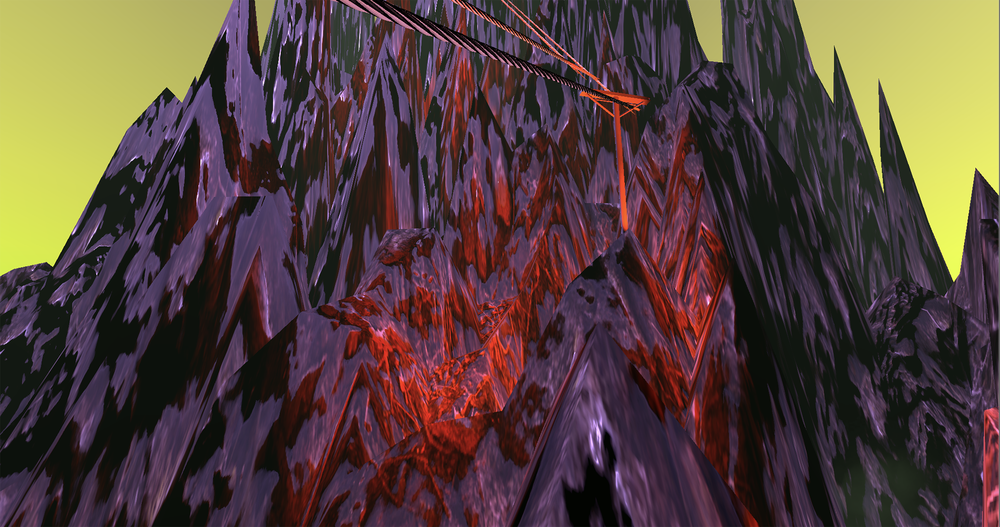
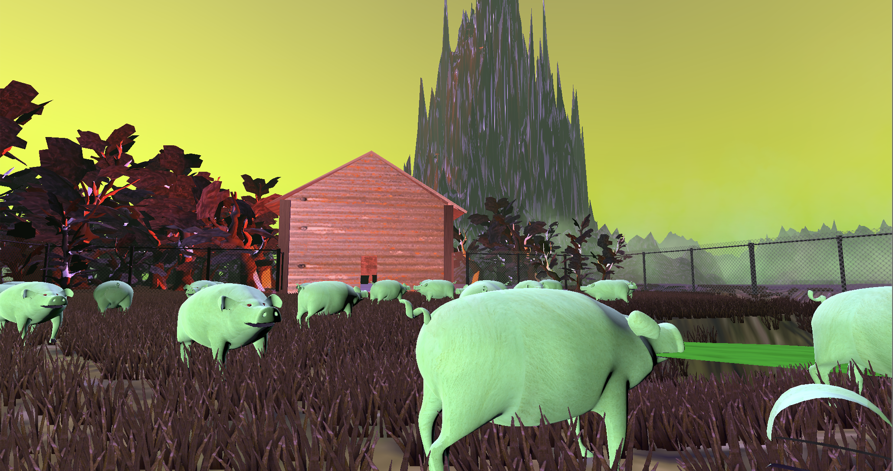

Along with my partner, Ash Garay, I crafted an imaginative, dystopic world and
brought it
to life
using
Maya and
Unity to create 3D assets, environments, animations, and cinematic perspective. We began by
generating
random,
binding
plot points as a catalyst to construct the history, economy, and society of our world. We imagined our
resulting
resulting blood-lust, pig-farming society situated on a tumultuous, environmentally toxic planet
riddled
with
cataclysmic events. Using camera perspective and animation, we tell the story of our planet from the
perspective of
it's central
currency,
pig blood. I built the environment
and
models for this project which included creating the landscape, lighting, weather, animals, plants,
and
objects
as well
as arranging these elements to set the scene for our narrative to unfold. Along with
solidifying
my
technical
skills
modelling, texturing, and creating virtual environments, in this project I
created
and
visually
translated a complex narrative into interactive space.
Scene 1: Perspective of Pig
Scene 2: Slaughter House
Scene 3: Perspective of Blood in Transit
Scene 4: Transported to Castle & Dictator's Death
The Narrative
1 / 5

Planet Hemoglobin is exiting a 500 year long ice-age due to intense factory production. Years of
using
nuclear energy and
greenhouse gases has melted the ice and pumping enormous amounts of toxins and
chemicals
into the
atmosphere. This period is expriencing never before seen cataclysmic events and “natural”
disasters.
2 / 5
This proves to be a very big problem, as the beings of this planet have no sense of touch or
sensitivity to
physical
stimuli other than
sound and light; making anticipating and understanding the effects of new environmental
disasters nearly
impossible.
3 / 5

The climate & weather of this planet is variable but the mood is ominous and the air is filled
with
fear of the
unknown. The skies are a mix of dark and toxin filled clouds and hues. The environment is full
of
thick
dense fog and
the melting toxin-filled ice glaciers add to the eeriness of the planet.
To protect against these elements now the species on this
planet
(who are
essentially only amebic skeletons) cover themselves in pumpkins as an adoptive exoskeleton.
4 / 5
The economy centers around a dystopian pig farming society in which pig blood is the only
commodity,
wealth,
and
food
supply. Our characters survive solely on
extracting and ingesting the
blood of the pig. The purest blood is
the red blood
cells in the heart of the pigs() a mere 3-4 drops per pig). Purness of blood dictates its value:
Whole
blood
is
the least valuable (cluttered with
unnecessary platelets, plasma etc), while blood containing only red blood cells has the highest
value.
5 / 5
The story follows a slavedriver dictator who desires nothing more than the purest pig blood at
the
expense of her
people and the environment.
She farms roughly 1000
pigs every days
just for her personal use. The deconstruction of the atmosphere comes not only from the
industrialization
pig-blood
extraction and
shipping, but also the toxicity of the pig bodies themselves which are irresponsibly thrown
into
local
bodies of water;
creating magmic lakes of toxic energy.